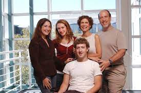

WHO IS HE :
Mark Elliot Zuckerberg (/ˈzʌkərbɜːrɡ/; born May 14, 1984) is an American business magnate, internet entrepreneur, and philanthropist. He is known for co-founding the social media website Facebook and its parent company Meta Platforms (formerly Facebook, Inc.), of which he is the executive chairman, chief executive officer, and controlling shareholder.
Zuckerberg attended Harvard University, where he launched Facebook in February 2004 with his roommates Eduardo Saverin, Andrew McCollum, Dustin Moskovitz, and Chris Hughes. Originally launched to select college campuses, the site expanded rapidly and eventually beyond colleges, reaching one billion users in 2012. Zuckerberg took the company public in May 2012 with majority shares. In 2007, at age 23, he became the world's youngest self-made billionaire. He has used his funds to organize multiple philanthropic endeavors, including the Chan Zuckerberg Initiative.
HIS INFLUENCE:
Zuckerberg has been listed as one of the most influential people in the world on four occasions in 2008, 2011, 2016 and 2019 respectively and nominated as a finalist in 2009, 2012, 2014, 2015, 2017, 2018, 2020, 2021 and 2022. He was named the Person of the Year by Time magazine in 2010, the same year when Facebook eclipsed more than half a billion users.[3][4][5] In December 2016, Zuckerberg was ranked tenth on Forbes list of The World's Most Powerful People.[6] In the Forbes 400 list of wealthiest Americans in 2022, he was ranked 11th with a wealth of $57.7 billion, down from his status as the third richest American in 2021 with a net worth of $134.5 billion. As of March 2023, Zuckerberg's net worth was $73 billion according to the Forbes Real Time Billionaires making him the 15th richest person in the world.[7] A film depicting Zuckerberg's early career, legal troubles and initial success with the site, The Social Network, was released in 2010 and won multiple Academy Awards.
SOME OF HIS PICTURES WITH HIS FAMILY
